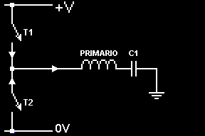
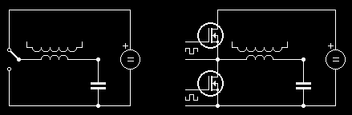

Bobina de Tesla de Estado Sólido (Teoria)
Depois de um bom tempo sem colocar nenhum projeto na EnergyLabs, resolvi voltar a postar com um projeto interessante, na realidade somente a teoria por enquanto.
Vocês já devem ter visto meu projeto de uma bobina de tesla, apesar da facilidade de montar uma (qualquer pessoa pode montar), há desvantagens no seu uso. O circuito primário (L1 e C1) é totalmente perigoso, colocando em risco a vida da pessoa que está testando ela (sintonizando). Por isso, todo cuidado é pouco, pois ao contrario do que todo mundo pensa em ver uma bobina de tesla (Olha os raios ali em cima! Deve ser completamente fatal encostar neles!), os raios na saída da bobina de tesla não matam, somente causam queimaduras internas/externas (dependendo do caso) e geralmente você não sente o choque por elas trabalharem em freqüências altas (150kHz +).
Na Bobina de Tesla de Estado Sólido (BTES em Português e SSTC em inglês, mais conhecida pela ultima sigla), o circuito primário não contem alta tensão. Mesmo continuando em muitos casos fatal, a probabilidade de se acontecer algo é bem menor (Em alguns casos chega a ser nula, dependendo da voltagem que a bobina trabalha). O principio de funcionamento é o mesmo da bobina de tesla comum (Spark Gap Tesla Coil, SGTC), porém, ao invés de se usar o Centelhador como chave para a energia no circuito primário, se usam chaves eletrônicas (Mosfets, Fets, Transistores Bipolares Comuns, IGBT's).
O desenho abaixo mostra o funcionamento básico:

Nesse circuito há 4 componentes:
-
T1 e T2 são as chaves.
-
A bobina primaria da bobina de tesla.
-
Capacitor C1
O funcionamento é o mesmo da SGTC, as chaves T1 e T2 tem estados reversos, sendo que quando a T1 está fechada a T2 está aberta e vice-versa.
No inicio, a chave T1 está fechada, carregando o capacitor C1 através da bobina Primária.
Depois de carregado C1, a chave T1 se abre e a T2 se fecha, colocando em “curto” o Capacitor com a bobina primaria (Note, o 0V é o mesmo que o Terra ali), descarregando completamente (ou parcialmente dependendo da freqüência) o capacitor. As correntes ali são altíssimas, podendo chegar a ordem de 100A.
E assim, o ciclo começa novamente.
Fácil de entender não? É mas nem tudo é tão fácil assim. Na bobina de tesla, não basta o capacitor ser descarregado na bobina primaria para se gerar alta tensão. A bobina de tesla é um transformador ressoante. O quer dizer isso? Bem, o funcionamento dela é igual a de um balanço (é, aqueles onde você senta em cima e alguem te empurra).
Seguindo o exemplo do balanço:
-
Primeiro alguem te empurra. Você vai para frente e depois volta.
-
Logo quando você volta para um pouco atrás do que você saiu, ele te empurra novamente.
-
Seguindo o ciclo, cada vez você balançara mais forte e mais caso ele continue te empurrando com a mesma força.
Isso daí, é a ressonância. É exatamente igual na bobina de tesla, só se troca os papéis:
-
Da-se um pulso no primário. A energia do primário é transferida para o secundário, onde ela vai seguindo o fio, espira por espira. Ela chega ao topo da bobina de tesla (no fim dela) e depois volta.
-
Logo quando ela voltar para onde ela saiu, da se um outro pulso no primário, causando a transferência de energia do primário para o secundário, só que agora, há o dobro de energia no secundário. Novamente, a energia sobe (agora dobrada) e desce.
-
Novamente outro pulso. E agora a energia é o triplo.
-
E assim se segue o ciclo ressoante.
Basicamente, a energia na bobina de tesla é acumulativa. Num balanço, a velocidade disso é lenta, se uma bobina de tesla trabalhasse na velocidade de um balanço, levaria minutos para que ela carregasse e depois gerasse alta tensão. Mas na bobina de tesla, essas frequências estão acima de 150kHz (150.000 vezes por segundo, no caso, ciclos por segundo), fazendo com que não se perceba quando a energia no secundário acaba (pela descarga da mesma).
Então, o que temos que fazer? Simples, fazer um oscilador que opere na frequência de ressonância da bobina secundaria e um driver de mosfets (ou IGBTs) para o primário!
Bom começando pelo driver, que é a parte mais simples de se montar, abaixo vai um esquemático básico:

Seguindo a primeira parte de figura, mostra como o circuito deve atuar. Na segunda parte mostra o driver básico. Ao reparar no esquema, repare que os dois mosfets são exatamente iguais, então surge um problema. Se eu ligar os dois Gates do mosfet juntos, eles acionam ao mesmo tempo, então como fazer? Simples, um vai ter o sinal “ao contrario” do outro. Como eles são sinais lógicos pode se usar simples portas logicas NOT (ou inversoras). Na maior parte dos casos, é melhor se isolar o circuito primário do secundário, então usa-se um GDT.
Mas o que seria isso? Bom, basicamente ele é um transformador com 3 enrolamentos iguais ou 2 enrolamentos iguais e um com a metade do tamanho (Rates 1:1:1 ou 1:2:2). A vantagem de se usar eles é que você isola o circuito do oscilador com o circuito do driver. Outra vantagem é que não precisa usar portas inversoras, pois cada um dos enrolamentos tem a mesma oscilação, então basta inverter a ligação deles no mosfet.
Mas mesmo depois disso, ainda temos outro problema, como as ondas digitais são do tipo “quadrada”, não há intervalo entre a abertura de um e o fechamento de outro. Praticamente elas trocam de posições “na hora”. Mas mesmo assim há um tempo que elas permanecem no mesmo estado (ambas fechadas) colocando em “curto” a fonte de alimentação por um breve tempo. Isso não é problema para a fonte de alimentação, pois o momento é tão breve, que nem os mosfets queimam com isso. O problema é que isso gera dissipação de calor desnecessária nos mosfets. Como corrigir isso? Simples, adicionando um Break-Point. Mas o que seria isso?
Bem, traduzindo ao pé da letra em inglês, é Ponto de Quebra. Na melhor tradução, podemos colocar como Ponto de Corte, isto é, um ponto, onde nenhum dos dois mosfets estará fechado, onde o GDT não terá voltagem nenhuma nos seus enrolamentos secundários.
Como funciona isso exatamente?
É realmente bem simples, após a queda de um sinal para 0V (Nível lógico 0) , adiciona-se um tempo, antes que o segundo suba. Nesse tempo, ambos os sinais, são 0V (Ou seja, as duas “chaves” estão abertas). Feito isso, a chave 1 abre, espera-se um tempo, chave 2 fecha, chave 2 abre, espera-se um tempo, chave 1 fecha.
Bom, mas vamos ao que interessa! Um circuito básico que vai do driver para o GDT até o driver da bobina de tesla.
(Clique para abrir no tamanho real)
Explicações? Claro! Vamos lá:
1º) O que é o CLOCK e o ENABLE?
R: O clock e o enable vem de dois osciladores distintos. Sendo o clock, vindo do oscilador com a frequência ressoante da bobina de secundaria, e o enable do oscilador para o break-point.
2º) O que é esse TC4420 e o conjunto dele ligado no GDT?
R: O TC4420 é um driver de 6A para mosfets, dentro dele, há um circuito bem parecido com o do driver da bobina de tesla. O funcionamento é o mesmo também, repare o capacitor C1 ali, o TC4420 tem um par de mosfets interno (Um P e um N) assim, o P carrega o C1 através da bobina primaria do GDT e o N descarrega o C1 na bobina primaria. Repare o valor do C1 é bem alto, quanto mais alto melhor, apesar de depois de um certo valor, não dar diferença alguma.
3º) Repare no GDT, há bolinhas nos enrolamentos. Isso representa a polaridade dele em relação ao primário. Repare também que um enrolamento ta ligado ao contrario do outro no mosfet.
4º) Pra que os diodos zener ali?
R: Bom, os diodos zener são necessários quando o GDT tem a ratio de 1:2:2 (Ou seja, o enrolamentos secundários tem o dobro de voltas do que o primário) fazendo assim, a voltagem do secundário ser o dobro da do primário. Como normalmente esses CI's (TC4420) são alimentados com 12V, a voltagem no secundário será próxima a 24V. Onde se passa 4V do máximo de voltagem nos gates dos mosfets, o que é muito ruim pois eles queimam muito fácil. Então os diodos zener de 15V são colocados um contra o outro para que se conduza a tensão > 15V de volta para o GDT. O resistor R1 é para limitar a corrente entre o zener o GDT, para evitar a queima dos Zeners.
Bom, a teoria termina aqui, não irei apresentar um oscilador pois há muitos na EnergyLabs. Em breve estarei postando uma bobina de tesla de estado sólido feita por min, fotos e vídeos dela também.
Fontes:
http://www.richieburnett.co.uk/sstate2.html
http://www.richieburnett.co.uk/sstate3.html
Feito por Lucas Teske
Energy Labs Brasil

Esta obra de EnergyLabs Brasil, foi licenciada com uma Licença Creative Commons - Atribuição - Partilha nos Mesmos Termos 3.0 Não Adaptada.
Permissões adicionais ao âmbito desta licença podem estar disponíveis em http://www.energylabs.com.br.